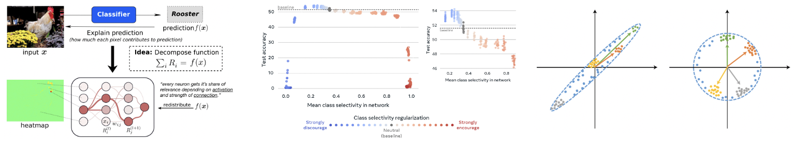

CVPR 2021 4th Tutorial onInterpretable Machine Learning for Computer Vision |
||
Live Panel Session at 14:00 - 15:00 EST, June 20, 2021 |
||

Complex machine learning models such as deep convolutional neural networks and recursive neural networks have recently made great progress in a wide range of computer vision applications, such as object/scene recognition, image captioning, visual question answering. But they are often perceived as black-boxes. As the models are going deeper in search of better recognition accuracy, it becomes even harder to understand the predictions given by the models and why.
Continuing from the 1st Tutorial on Interpretable Machine Learning for Computer Vision at CVPR’18, the 2nd Tutorial at ICCV’19, and the 3rd Tutorial at CVPR’20 where more than 1000 audiences attended, this series tutorial is designed to broadly engage the computer vision community with the topic of interpretability and explainability in computer vision models. We will review the recent progress we made on visualization, interpretation, and explanation methodologies for analyzing both the data and the models in computer vision. The main theme of the tutorial is to build up consensus on the emerging topic of machine learning interpretability, by clarifying the motivation, the typical methodologies, the prospective trends, and the potential industrial applications of the resulting interpretability.
Tutorial lectures will be pre-recorded and uploaded to webpage by the end of June 20. The panel session will be live at 14:00 - 15:00 EST June 20, come to join us! The live panel discussion link can be accessed at the CVPR portal.
14:00 - 15:00 EST: Live Panel Session with Wojciech, Cynthia, Bolei, and Ari (ZOOM Link is in the CVPR portal)
Lecture 1 by Wojciech Samek: XXAI: eXtending XAI towards Actionable Interpretability
Lecture 2 by Cynthia Rudin: Interpretable Neural Networks for Computer Vision: Clinical Decisions that are Computer-Aided, not Automated
Lecture 3 by Ari Morcos: Towards Falsifiable Interpretability Research
Lecture 4 by Bolei Zhou: Interpreting Deep Generative Models for Interactive Content Creation
Please contact Bolei Zhou if you have question.
Previous Tutorials on Interpretable ML for CV: CVPR'20, ICCV'19, CVPR'18